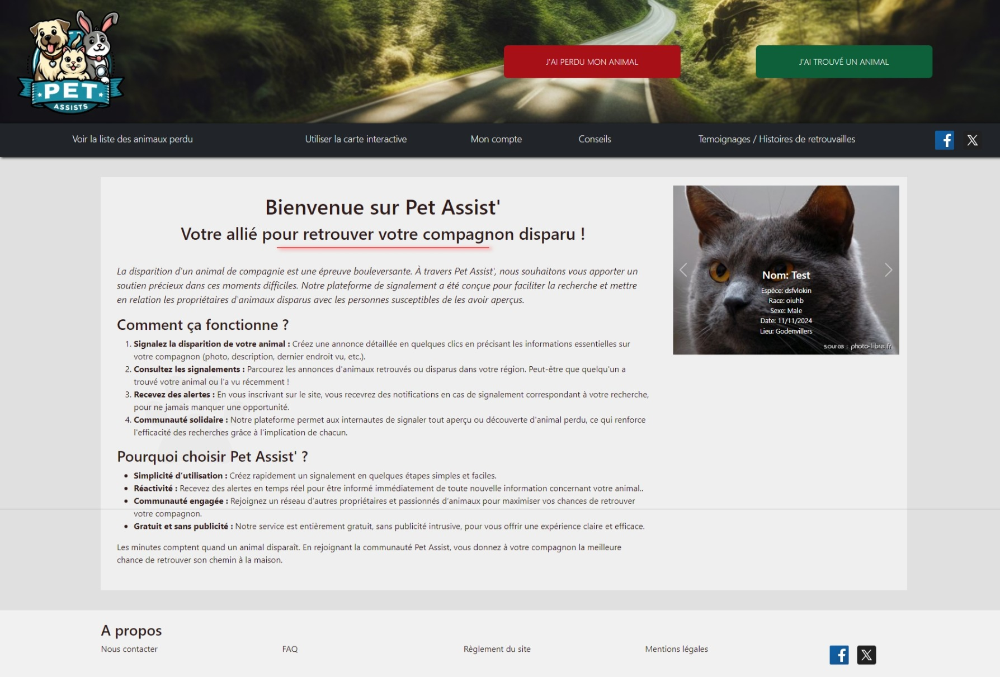
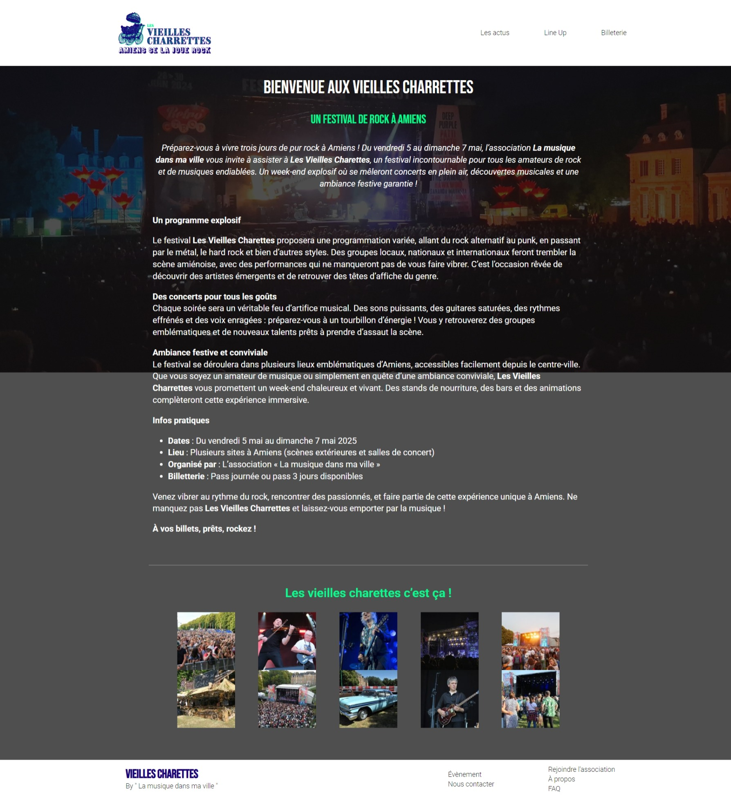
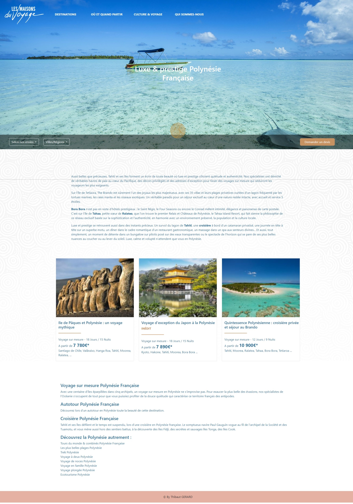
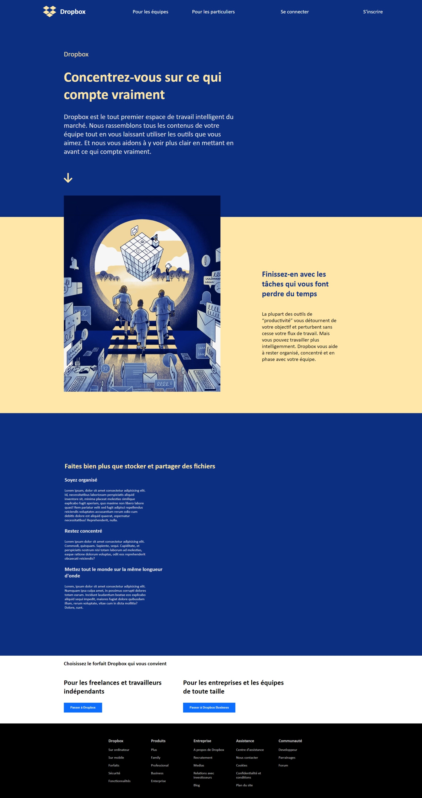
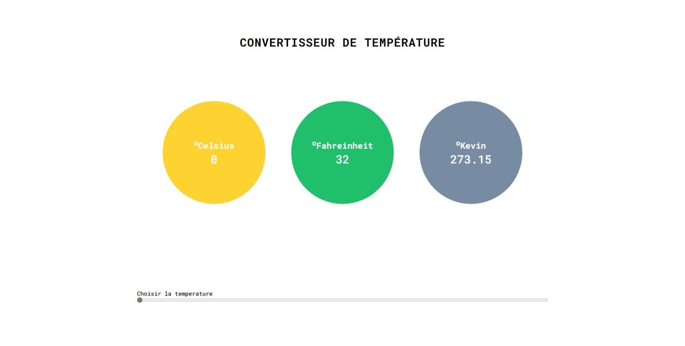

Bonjour et bienvenue sur la présentation de mes humbles projets.
Je m'appelle Thibaut, j'ai 29 ans et je suis passionné par le développement informatique depuis mes
années
collèges, et depuis, je n'ai cessé d'explorer ce domaine en constante évolution.
Aujourd'hui, j'ai décidé de transformer cette passion en véritable métier.
Je me spécialise dans le développement web et logiciel, et je mets mes compétences au service de
projets
divers allant de la création
de sites internet à des solutions logicielles plus complexes.
Mon objectif est de concevoir des solutions techniques innovantes et efficaces, adaptées aux besoins
spécifiques de chaque personnes.
Vous trouverez ci-dessous mes projets réalisés, qui je pense, témoignent de mon engagement à offrir
des produits de qualité et à relever de nouveaux défis.
Mes projets
Pet assist'
Ce site a pour objectif de faciliter la mise en relation des
propriétaires d'animaux et des personnes ayant retrouvé un animal perdu.
Que ce soit pour signaler un animal errant ou pour retrouver un compagnon disparu, la
plateforme permet de publier des annonces rapidement et de manière intuitive.
L’idée est de créer une communauté engagée où chacun peut contribuer à retrouver des
animaux perdus, et ce, de façon simple et efficace.
En cours de developpement:
Les Vieilles Charrettes [WORDPRESS]
Les Vieilles Charrettes est un projet réalisé dans le cadre d'un
exercice scolaire, où l'objectif était de créer un site WordPress avec un logo et deux
couleurs.
Ce projet se concentre sur la simplicité du design, offrant une présentation épurée et
un style visuel minimaliste, tout en respectant les contraintes imposées.
En cours de developpement:
Les maisons du voyage
Ce projet présente un design conceptuel d’un site destiné à aider
les utilisateurs à choisir leur maison de vacances idéale.
Il n'est pas destiné à être développé en site fonctionnel, mais plutôt à offrir une
expérience visuelle soignée, avec une interface claire et attractive.
L'objectif est de montrer comment un tel site pourrait être structuré et conçu pour
faciliter la recherche de locations de vacances.
Les maisons du voyage
Dropbox est un projet réalisé dans le cadre d'un exercice
scolaire.
L'objectif était de reproduire le plus fidèlement possible le design du site
internet.
Le design repose sur l'utilisation de quelques screens de l'ancien site DropBox ainsi
que l'utilisation de la WayBack Machine.
Convertisseur degrés
Ce site permet de convertir facilement toutes les unités de
température (Celsius, Fahrenheit, Kelvin, etc.).
Avec une interface simple et intuitive, il offre aux utilisateurs une solution
rapide et
efficace pour effectuer des conversions de degrés, tout en étant entièrement
fonctionnel.